import matplotlib.pyplot as plt
import numpy as np
from abtem.atoms import orthogonalize_cell, pretty_print_transform
from ase.build import bulk, graphene
from ase.io import read
from abtem import show_atoms
Orthogonal periodic supercells#
The multislice algorithm requires an orthogonal periodic atomic structure as its input. However, taking any arbitrary structure and making it periodic and orthogonal is not as trivial as one might think. This tutorial provides some intuition into the problem and introduces a tool in abTEM’s atoms module for solving it. If you are not interested in background information you can skip to the section named “The orthogonalize_cell function”.
Making 2D cells orthogonal#
Hexagonal cells#
We will start building our intuition by first considering the special case of hexagonal structures. Below we create a minimal unit cell of graphene and show a corresponding repeated supercell.
gra = graphene(vacuum=2)
fig, (ax1, ax2) = plt.subplots(1, 2, figsize=(8, 4))
show_atoms(gra, ax=ax1)
show_atoms(gra * (4, 4, 1), ax=ax2);
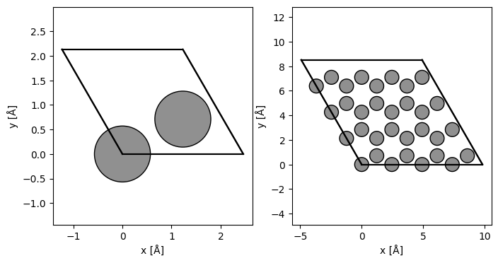
The ASE atoms object’s cell is a three-dimensional array, so that e.g. the first lattice vector can be addressed with the index 0, and the x-component of the second lattice vector with the indices 1,0:
print(gra.cell[0])
print(gra.cell[1, 0])
[2.46 0. 0. ]
-1.23
The hexagonal cell is almost orthogonal. We just need to somehow make the \(x\)-component of the second (or \(b\)) lattice vector zero. Let’s first define and display the lattice vectors.
a, b, c = gra.cell
print("a = ({:.3f}, {:.3f}, {:.3f})".format(*a))
print("b = ({:.3f}, {:.3f}, {:.3f})".format(*b))
print("c = ({:.3f}, {:.3f}, {:.3f})".format(*c))
a = (2.460, 0.000, 0.000)
b = (-1.230, 2.130, 0.000)
c = (0.000, -0.000, 4.000)
Now, let’s see what happens if we make this change by just changing the \(x\)-component of \(b\).
wrong_gra = gra.copy()
cell = wrong_gra.cell.copy()
cell[1] = [0.0, b[1], 0.0]
wrong_gra.set_cell(cell)
fig, (ax1, ax2) = plt.subplots(1, 2, figsize=(8, 4))
show_atoms(wrong_gra, ax=ax1)
show_atoms(wrong_gra * (4, 4, 1), ax=ax2);
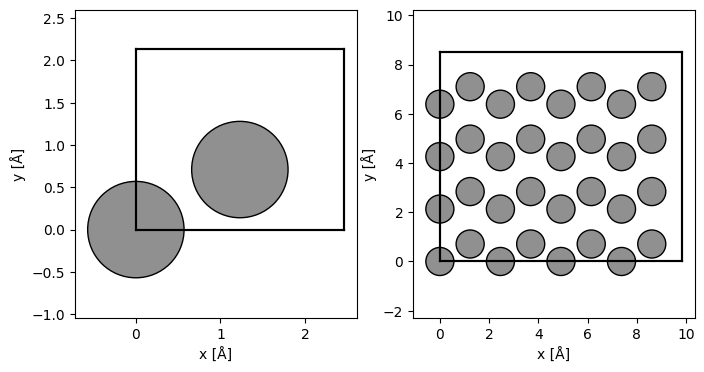
The result is a cell that is obviously orthogonal, but when it is repeated, it no longer tiles space to produce the graphene structure.
To preserve periodicity, we must create a new lattice vector by combining an integer number of the old lattice vectors. Let’s call the new lattice vector \(b'\), and observe that for this structure, we should only combine the \(a\) and \(b\) vectors, since the \(c\) vector only has a \(z\)-component. Hence, we can write, \(b'\), as
where \(k\) and \(m\) are integers. To make the structure orthogonal, the \(x\)-component of \(b'\) has to be zero:
Combining these conditions and using the lattice parameter of graphene we get:
If we further constraint \(b_y\) to be non-zero and wish to have the smallest possible new unit cell, this leads to the solution \(k = 1\) and \(l = 2\):
Below we create a new graphene structure with the lattice vectors \(a\), \(b'\) and \(c\). Note that to multiply the \(b\) lattice vector by two, we instead repeat the atoms object in that direction, this fills in the additional atoms needed for the larger unit cell. We also make use of the wrap method to map atoms from outside the cell back into it.
orthogonal_gra = gra * (1, 2, 1) # multiply the b lattice vector by 2
orthogonal_gra.cell[1] += a # add the a lattice vector
wrapped_orthogonal_gra = orthogonal_gra.copy()
wrapped_orthogonal_gra.wrap()
# "wrap" the atoms outside the cell back into the cell (not strictly necessary due to periodic boundaries)
fig, (ax1, ax2, ax3) = plt.subplots(1, 3, figsize=(12, 4))
show_atoms(orthogonal_gra, ax=ax1)
show_atoms(wrapped_orthogonal_gra, ax=ax2)
show_atoms(wrapped_orthogonal_gra * (3, 2, 1), ax=ax3);
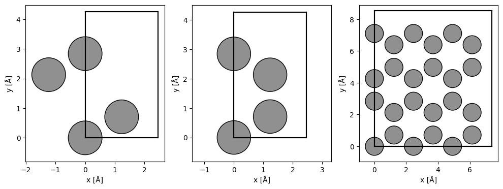
Monoclinic cells#
The approach for hexagonal structures works in general for other 2D structures. However, the minimum values of \(k\) and \(l\) are dependent on the ratio of the lattice vectors. This ratio can take on any value, e.g. if the ratio is \(-5 / 3\) then \(k = 3\) and \(l=5\) is the smallest solution.
This may be problematic in some cases. If the structure is very close to orthogonal, the ratio and hence the number of repetitions can become huge, requiring prohibitive computational resources when we try to use the atoms in a simulation. Moreover, if the ratio is irrational there will not even be an integer solution.
The latter is not a serious problem in practice, as we can always apply a tiny amount of strain to the unit cell, such that the ratio is a close rational approximation of the actual ratio.
As an example, if the ratio is \(\pi\), we can slightly strain the structure such the the ratio is \(22 / 7\)
to get the solution
Next, we will work through an example for the monoclinic structure of titanate, which requires applying strain.
titanate = read("data/titanate.cif")
show_atoms(titanate, title="Titanate", legend=True);
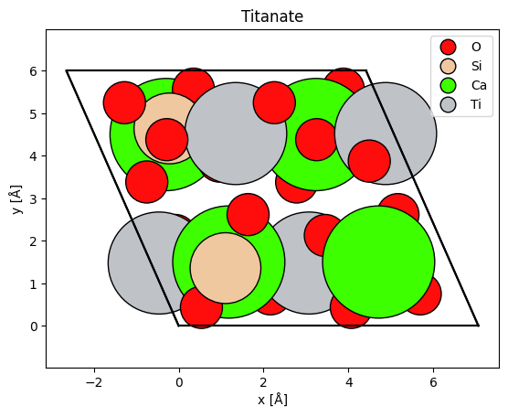
The ratio of the \(x\)-components of the \(a\) and \(b\) lattice vectors is:
print(f"Titanate lattice vector ratio: {(titanate.cell[0,0] / titanate.cell[1,0]):.5f}")
Titanate lattice vector ratio: -2.67002
We use the rational approximation \(-2.67 \approx -2.5 = -5 / 2\), and hence need to apply a strain to the unit cell such that \(a_x / b_x = 2.5\). We can use the set_cell method to apply strain to the cell and the atoms. Finally, we repeat the cell and set \(b_x = 0\), as we did for the graphene example.
orthogonal_titanate = titanate.copy()
new_cell = orthogonal_titanate.cell.copy()
new_cell[1, 0] = -orthogonal_titanate.cell[0, 0] * (2 / 5)
orthogonal_titanate.set_cell(new_cell, scale_atoms=True)
orthogonal_titanate = orthogonal_titanate * (1, 5, 1)
orthogonal_titanate.cell[1, 0] = 0.0
orthogonal_titanate.wrap()
show_atoms(orthogonal_titanate);
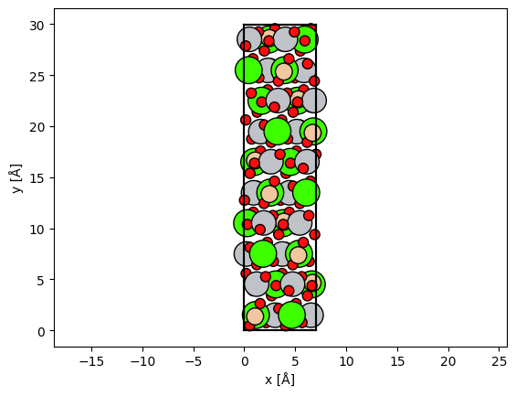
In this case the final structure is not exactly identical to the input due to the applied strain. However, we can get closer by using a better rational approximation of \(2.67\). The next rational approximation only requires slightly larger numbers, \(8 / 3 \approx 2.6667\), and provides a significant improvement. The following approximation after that is however \(139/52 \approx 2.6731\), which would require a huge unit cell for very little additional benefit.
The orthogonalize_cell function#
The orthogonalize_cell function automates the steps we took above for arbitrary cells in 3D. It will make a unit cell orthogonal by repeating it until the lattice vectors align with the three principal Cartesian directions. The maximum number of allowed repetitions may be given using the max_repetitions argument.
If an exactly orthogonal cell can be created using a smaller number of repetitions, the solution with the smallest number of repetitions will be returned (a larger cell can always be created as desired by multiplying the atoms object).
If it is not possible to make the structure orthogonal within the given max_repetitions, the function will return the smallest structure among the most orthogonal structures. That structure will be forced to become orthogonal by applying an affine transformation to the cell and the atoms, i.e. the crystal will be slightly strained and/or rotated.
The 2D examples introduced above are easily solved. For titanate we restrict the repetitions to 5, hence the same strained titanate structure is obtained as above.
orthogonal_gra = orthogonalize_cell(gra)
orthogonal_titanate = orthogonalize_cell(titanate, max_repetitions=5)
fig, (ax1, ax2) = plt.subplots(1, 2)
show_atoms(orthogonal_gra, ax=ax1, title="Orthogonal graphene cell")
show_atoms(orthogonal_titanate, ax=ax2, title="Orthogonal titanate cell")
plt.tight_layout()
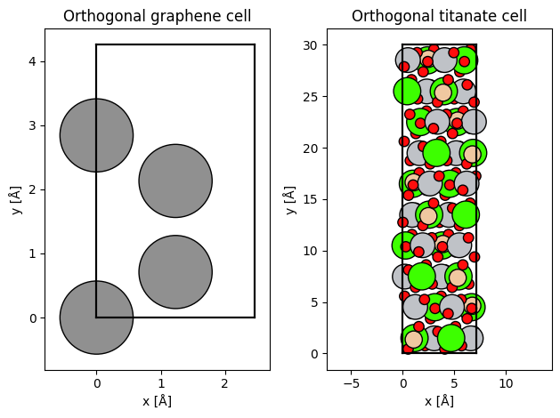
The function also works on arbitrary 3D crystals. We first consider the example of face-centered cubic gold. The bulk function from ASE creates the minimal unit cell by default, which orthogonalize_cell will convert to a conventional unit cell.
gold = bulk("Au")
orthogonal_gold, gold_transform = orthogonalize_cell(gold, return_transform=True)
fig, (ax1, ax2) = plt.subplots(1, 2, figsize=(10, 5))
show_atoms(gold, ax=ax1, title="Minimal gold unit cell")
show_atoms(orthogonal_gold, ax=ax2, title="Conventional gold unit cell");
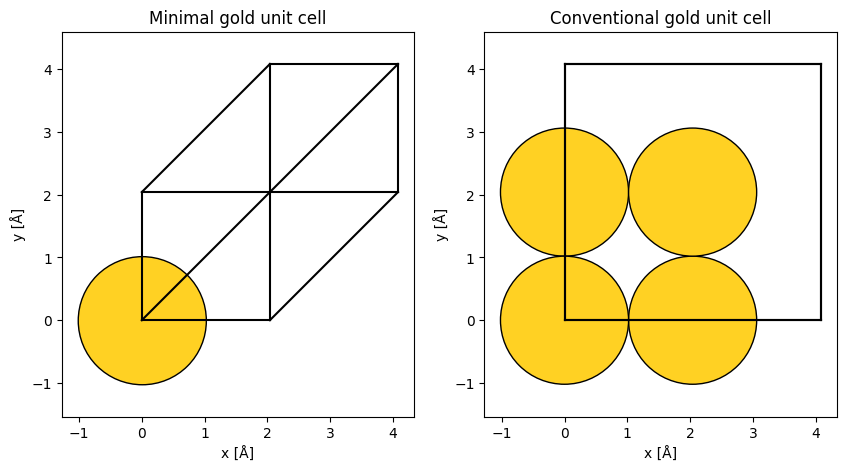
By setting return_transform=True, the affine transformation required to make the repeated cell orthgonal is returned. The transform consists of the three Euler angles of an extrinsic \(x\) then \(y\) then \(z\) rotation; a normal strain for the principal axes \(x\), \(y\) and \(z\); and a shear strain for \(xy\), \(xz\) and \(yz\).
In the case of face-centered cubic gold, we know that it is possible to create an orthogonal cell without applying strain, hence, as expected no affine transformation was required (for viewing the structure along the [1,0,0] zone axis).
pretty_print_transform(gold_transform)
Euler angles (degrees): x = 0.000, y = -0.000, z = 0.000
Normal strains (percent): x = 0.000, y = 0.000, z = 0.000
Shear strains (percent): xy = 0.000, xz = 0.000, xz = 0.000
Next we try the same for a crystal that does not have a perfectly equivalent orthogonal cell.
turquoise = read("data/turquoise.cif")
show_atoms(turquoise, title="Turquoise");
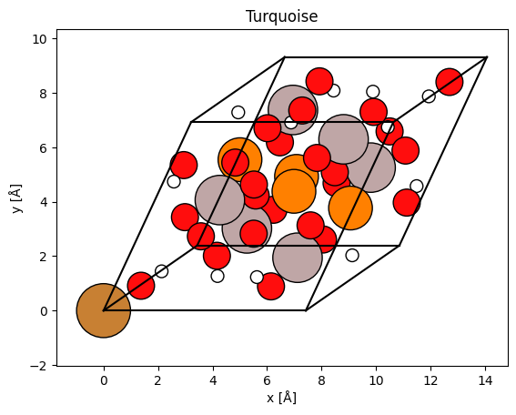
print("Turquoise cell angles:", turquoise.cell.angles())
Turquoise cell angles: [68.61 69.71 65.08]
Applying orthogonalize_cell with max_repetitions = 6 we obtain the result below.
orthogonal_turquoise, turquoise_transform = orthogonalize_cell(
turquoise, max_repetitions=6, return_transform=True
)
fig, (ax1, ax2) = plt.subplots(1, 2, figsize=(8, 6))
show_atoms(orthogonal_turquoise, ax=ax1)
show_atoms(orthogonal_turquoise, ax=ax2, plane="xz");
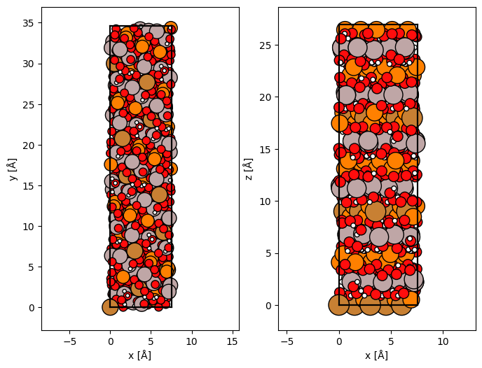
In this case, a small transformation was necessary, for example a normal strain in \(x\) of \(1.5 \%\).
pretty_print_transform(turquoise_transform)
Euler angles (degrees): x = -0.501, y = -0.718, z = -2.027
Normal strains (percent): x = 1.519, y = -0.056, z = -0.012
Shear strains (percent): xy = -3.496, xz = 1.234, xz = -0.875
Crystal directions#
Even if we have an orthogonal structure with a given zone axis aligned with the z direction, we may need to perform a transformation to obtain a cell for another desired direction. The orthogonalize_cell function respects the orientation of the input crystal, hence we can rotate the crystal and then use the function to get a cell with lattice vectors pointing along the principal directions.
gold_110 = gold.copy()
gold_110.rotate(45, "x", rotate_cell=True)
gold_110 = orthogonalize_cell(gold_110, max_repetitions=5)
show_atoms(gold_110 * (2, 2, 1), title="Gold [110] (2x2 supercell)");
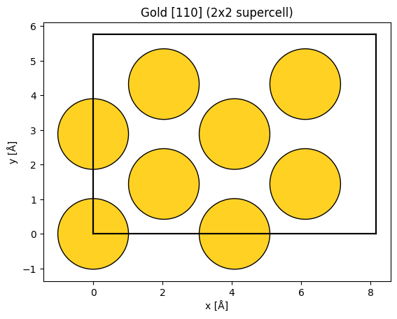
As an alternative to rotating the structure, the surface function from ASE can create an atomic structure for a given zone axis. Unlike orthogonalize_cell, this function always finds the minimal structure, which may not be orthogonal.
from ase.build import surface
gold_111 = surface(
gold, (1, 1, 1), layers=5, periodic=True
) # 111 direction aligned with z but not orthogonal
gold_111_orthogonal = orthogonalize_cell(gold_111)
_, (ax1, ax2) = plt.subplots(1, 2, figsize=(10, 6))
show_atoms(gold_111 * (2, 2, 1), title="Gold [111] (2x2 supercell)", ax=ax1)
show_atoms(gold_111_orthogonal, title="Orthogonal gold [111]", ax=ax2);
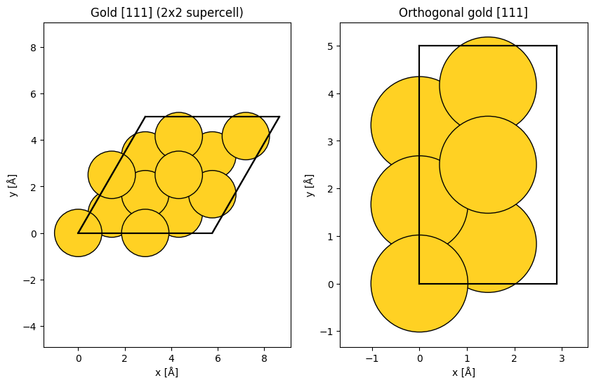
Small rotations away from a low-order zone axis may require a very large number of repetitions, or alternatively some repetions and a transformation. Here we rotate the gold structure 3 degrees away from the \([100]\) zone axis with max_repetitions = 10.
desired_rotation = 3
rotated_gold = gold.copy()
rotated_gold.rotate(desired_rotation, "y", rotate_cell=True)
rotated_gold, rotated_gold_transform = orthogonalize_cell(
rotated_gold, max_repetitions=10, return_transform=True
)
fig, (ax1, ax2) = plt.subplots(1, 2, figsize=(10, 5))
show_atoms(rotated_gold * (1, 5, 1), ax=ax1, title="Rotated gold beam view")
show_atoms(rotated_gold, ax=ax2, plane="xz", title="Rotated gold side view");
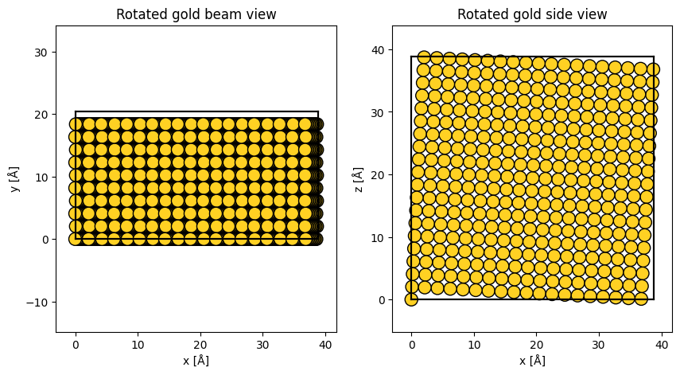
Inspecting the transformations we see that a rotation of \(-0.013\) degrees was required. This means that we were not able to obtain an orthogonal structure rotated by exactly \(3\) degrees (for this value of max_repetitions), instead we got a structure rotated by \(2.987\) degrees.
pretty_print_transform(rotated_gold_transform)
Euler angles (degrees): x = 0.000, y = -0.013, z = -0.000
Normal strains (percent): x = 0.000, y = 0.000, z = -0.000
Shear strains (percent): xy = -0.000, xz = -0.000, xz = 0.000
Twisted bilayer graphene#
Twisted bilayer graphene is an example of a system of great research interest, where creating orthogonal commensurate unit cells is highly non-trivial. Let’s explore how this can be done using abTEM’s orthogonalize_cell function.
Let’s start with taking two orthogonal graphene unit cells, rotating one of them by half of our desired relative rotation of 3.15 degrees. We studied an equivalent structure with GPAW and abTEM in a recent publication (https://onlinelibrary.wiley.com/doi/10.1002/smll.202100388).
gra1 = wrapped_orthogonal_gra.copy()
gra2 = wrapped_orthogonal_gra.copy()
desired_rotation = 3.15
gra1.rotate(-desired_rotation / 2, "z", rotate_cell=True)
gra1.wrap()
gra2.rotate(desired_rotation / 2, "z", rotate_cell=True)
gra2.wrap()
fig, (ax1, ax2) = plt.subplots(1, 2, figsize=(10, 5))
show_atoms(gra1, ax=ax1)
show_atoms(gra2, ax=ax2);
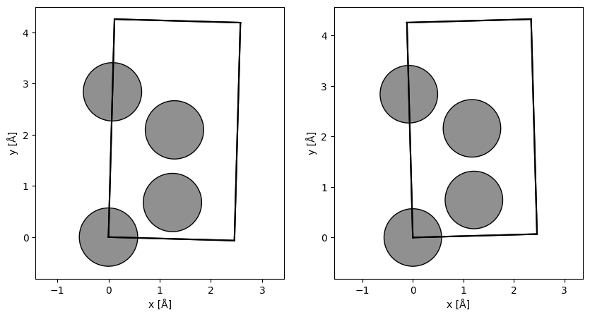
We need to make each of the rotated cells orthogonal, to avoid adding strain we set max_repetitions=70.
max_repetitions = 70
gra1_orthogonal, gra1_transform = orthogonalize_cell(
gra1, max_repetitions=max_repetitions, return_transform=True
)
gra2_orthogonal, gra2_transform = orthogonalize_cell(
gra2, max_repetitions=max_repetitions, return_transform=True
)
fig, (ax1, ax2) = plt.subplots(1, 2, figsize=(12, 4))
show_atoms(gra1_orthogonal, ax=ax1)
show_atoms(gra2_orthogonal, ax=ax2);
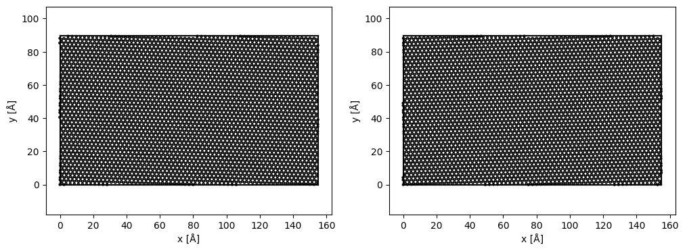
pretty_print_transform(gra1_transform)
Euler angles (degrees): x = 0.000, y = -0.000, z = -0.000
Normal strains (percent): x = -0.000, y = 0.000, z = 0.000
Shear strains (percent): xy = -0.000, xz = 0.000, xz = 0.000
We translate one of the layers in z by the van der Waals distance, and combine them into a bilayer that we center into the middle of the cell with 4 Å of vacuum.